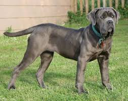

Razas Grandes

Algunas de las razas de perros más grandes incluyen el Gran Danés, el Mastín y el San Bernardo.
Estos perros requieren mucho espacio y atención, pero son conocidos por su lealtad.
Son excelentes compañeros para familias que disfrutan de la vida al aire libre.

Recuerda que los perros grandes también pueden ser muy cariñosos.